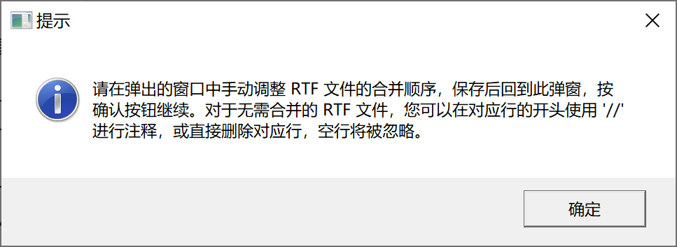
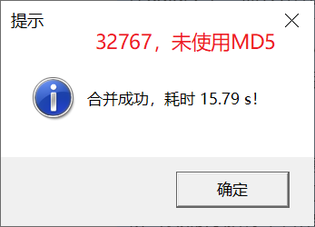
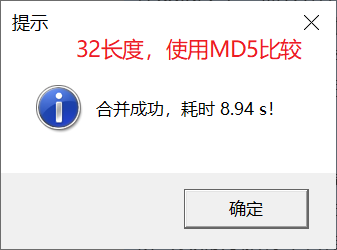

%MergeRTF
MergeRTF
合并 RTF 文件。
Compatibility : RTF 1.6 specification
依赖
无。
语法
必选参数
可选参数
调试参数
参数说明
DIR
Syntax : path | fileref
指定 RTF 文件夹路径或引用。指定的文件夹路径必须是一个合法的 Windows 路径。
[!IMPORTANT]
- 当指定的物理路径太长时，应当使用 filename 语句建立文件引用，然后传入文件引用，否则会导致 SAS 无法正确读取。
Example :
filename ref "D:\~\TFL";
DIR = ref;
OUT
Syntax : filename
指定合并后的 RTF 文件名称，需包含扩展名。合并后的 RTF 文件将保存在参数 DIR 指定的文件夹下。
Default : #AUTO
默认文件名为：merged-yyyy-mm-dd hh-mm-ss.rtf，其中 yyyy-mm-dd 表示当前系统日期，hh-mm-ss 表示当前系统时间。
Example :
RTF_LIST
Syntax : filename
指定定义合并清单的外部文件名，需包含扩展名。
文件 filename 应包含如下形式的文本（文件名仅作示例，与实际情况不完全相同）：
// X:\01 table\draft\表 7.3.3 不良事件汇总 安全集.rtf
// X:\01 table\draft\表 7.3.4 按系统器官分类和首选术语汇总 AE 安全集.rtf
// X:\01 table\draft\表 7.3.5 按系统器官分类和首选术语汇总 TEAE 安全集.rtf
// X:\01 table\draft\表 7.3.6 按系统器官分类和首选术语汇总 SAE 安全集.rtf
X:\01 table\表 7.3.3 不良事件汇总 安全集.rtf
X:\01 table\表 7.3.4 按系统器官分类和首选术语汇总 AE 安全集.rtf
X:\01 table\表 7.3.5 按系统器官分类和首选术语汇总 TEAE 安全集.rtf
X:\01 table\表 7.3.6 按系统器官分类和首选术语汇总 SAE 安全集.rtf
X:\01 table\表 7.3.7 按系统器官分类和首选术语汇总与试验用产品相关的 TEAE 安全集.rtf
X:\01 table\表 7.3.8 按系统器官分类和首选术语汇总与试验用产品相关的 SAE 安全集.rtf
X:\01 table\表 7.3.9 按系统器官分类、首选术语和严重程度汇总 TEAE 安全集.rtf
其中，每一行文本代表一个需要合并的 RTF 文件的路径。
例外：
- 以
// 开头的文本为注释，// 后面的 RTF 文件将不会被合并
- 空行将被忽略
宏程序将按照文件 filename 中文本指定的 RTF 路径，从上到下的顺序进行 RTF 文件的合并。
Default : #NULL
默认情况下，宏程序将根据参数 AUTOORDER 的值决定是否进行自动排序或手动排序。若指定 AUTOORDER = NO，则弹出窗口要求用户进行手动排序，生成经过排序后的 RTF 文件清单副本，并再次递归调用宏程序自身，递归调用时，指定 RTF_LIST = rtf_list_copy.txt。
Example :
rtf_list = rtf_list_copy.txt
[!TIP]
- 一般情况下，可以先指定
AUTOORDER = NO，在弹出的窗口中对 RTF 文件进行手动排序、删除（或添加 // 进行注释），宏程序将在参数 OUT 指定的文件夹下生成 rtf_list_copy.txt 文件，如 RTF 文件发生变更需再次合并，调用宏程序时可直接指定 RTF_LIST = rtf_list_copy.txt。
DEPTH
Syntax : numeric
指定遍历 RTF 文件的子文件夹深度。取值范围：
若需要合并的 RTF 文件存储在参数 DIR 指定的文件夹的子文件夹中。例如：某项目在 ~\TFL 目录下包含三个子文件夹，名称分别为： table, figure, listing 中，此时指定 DEPTH = 2，宏程序将读取根目录 ~\TFL 及其子文件夹 ~\TFL\table, ~\TFL\figure, ~\TFL\listing 中的所有 RTF 文件，但不会读取 ~\TFL\table, ~\TFL\figure, ~\TFL\listing 下的子文件夹中的 RTF 文件。
通过下面的文件夹结构可以更好地理解这一参数：
合并根目录 ~\TFL 中的所有 RTF 文件。
~:.
└─TFL
├─table
├─figure
├─listing
└─other
合并根目录 ~\TFL 及其子文件夹 ~\TFL\table, ~\TFL\figure, ~\TFL\listing, ~\TFL\other 中的所有 RTF 文件。
DEPTH = 3 :
~:.
└─TFL
├─table
│ └─draft
├─figure
├─listing
│ └─draft
└─other
~\TFL 及其子文件夹 ~\TFL\table, ~\TFL\figure, ~\TFL\listing, ~\TFL\other，以及 ~\TFL\table\draft, ~\TFL\listing\draft 中的所有 RTF 文件。
[!IMPORTANT]
Default : MAX
默认情况下，宏程序将合并参数 DIR 指定的文件夹下任何深度的子文件夹内的 RTF 文件。
[!TIP]
- 在 Windows 中，可通过
tree 命令显示当前路径的文件夹结构。
AUTOORDER
Syntax : YES | NO
指定是否自动排序
Default : YES
AUTOORDER = YES 时，宏程序根据 RTF 文件名自动排序，排序的具体细节见 #2AUTOORDER = NO 时，宏程序将弹出提示框，提示用户进行手动排序，同时打开一个包含当前目录下所有 RTF 文档名称的 .txt 文件，用户可调整此 .txt 文件中 RTF 文档名称显示的顺序，通过这种方式完成手动排序，保存此 .txt 文件后，点击确定，宏程序将会继续运行。

[!IMPORTANT]
EXCLUDE
Syntax : placeholder
指定排除名单，暂无作用。
Default ：#NULL
[!IMPORTANT]
VD
Syntax : drive
指定临时创建的虚拟磁盘的盘符，该盘符必须是字母 A ~ Z 中未被操作系统使用的一个字符。
Default : #AUTO
默认情况下，宏程序将自动选择一个未被操作系统使用的字母作为虚拟磁盘的盘符。
MERGE
Syntax : YES | NO
指定是否执行合并。
此参数通常用于测试运行，如果你需要合并的 RTF 文件过多，或者你不确定指定的参数（尤其是参数 DEPTH）是否正确，可以先指定参数 MERGE = NO，此时宏程序将不会执行合并操作，但会输出数据集 WORK.RTF_LIST，你可以查看此数据集，了解具体将会被合并的 RTF 文件。在该数据集中，仅当变量 rtf_filename_valid_flag 和 rtf_depth_valid_flag 同时为 Y 时，对应路径上的 RTF 文件才会被合并。
[!NOTE]
- 当 RTF_LIST 指定了非 NULL 值时，数据集
WORK.RTF_LIST 中变量 rtf_filename_valid_flag 和 rtf_depth_valid_flag 的值均为 Y。
Default ：YES
MERGED_FILE_SHOW
Syntax : path_type
指定 RTF 文件在日志中显示的路径类型，path_type 可取值如下：
SHORT：仅显示文件名FULL：显示完整路径VIRTUAL：显示虚拟磁盘路径
Default ：SHORT
LINK_TO_PREV
Syntax : YES | NO
指定是否将第二张及之后的 RTF 文件的页眉页脚链接到前一节
Default : NO
默认情况下，宏程序不会将第二张及之后的 RTF 文件的页眉页脚链接到前一节。
如果待合并的 RTF 文件的页眉或页脚包含相同的图片（例如：企业 logo 图片），则建议指定 LINK_TO_PREV = YES，宏程序将仅保留第一张 RTF 文件的页眉页脚，后续 RTF 文件的页眉页脚将自动链接到前一节，以压缩合并后的 RTF 文件的体积。
以下两种典型情况，指定 LINK_TO_PREV = YES 带来的时间成本与收益如下：
| 典型情况 |
参数值 |
运行时间 |
文件体积 |
| 页眉页脚包含图片 |
LINK_TO_PREV = NO |
7.20s |
16510KiB |
|
LINK_TO_PREV = YES |
8.87s |
4644KiB |
|
|
+23.19% |
-71.87% |
| 页眉页脚不含图片 |
LINK_TO_PREV = NO |
10.39s |
14084KiB |
|
LINK_TO_PREV = YES |
16.27s |
14006KiB |
|
|
+56.59% |
-0.55% |
* 上述表格数据是基于 SAS 9.4M7 运行在 Windows 10 上的单次测试结果，仅供参考。
可以发现，并非在所有情况下指定 LINK_TO_PREV = YES 都能带来明显收益。
- 当 RTF 文件的页眉、页脚包含图片时，指定
LINK_TO_PREV = YES 会增加少量运行时间，文件体积明显减小；
- 当 RTF 文件的页眉、页脚不含图片时，指定
LINK_TO_PREV = YES 会增加大量运行时间，文件体积几乎不变；
[!WARNING]
- 如果 RTF 文件的页眉、页脚仅包含文本内容，则谨慎指定
LINK_TO_PREV = YES；
- 如果 RTF 文件的页眉、页脚不一致，请勿指定
LINK_TO_PREV = YES；
- 如果 RTF 文件的页面布局存在不一致，请勿指定
LINK_TO_PREV = YES，否则可能导致部分页面的页眉、页脚超出页面边缘。
DEL_TEMP_DATA
Syntax : YES | NO
指定是否删除宏程序运行产生的中间数据集
Default ：YES
[!NOTE]
细节
1. 如何读取指定递归深度的子文件夹中 RTF 文件
使用 DOS 命令 DIR 的参数 /s，可以遍历指定目录下的文件，包括任意深度子文件夹中的文件，将获取到的文件路径列表写入外部文件 _tmp_rtf_list.txt 中。在 SAS 中，使用 infile 语句读取 _tmp_rtf_list.txt。由于在 Windows 系统下，文件名不能含有 \，因此，文件路径中的 \ 的数量可以被视为文件所处子文件夹的深度，假设指定 depth = n，宏程序将筛选出路径包含的 \ （路径中参数 DIR 部分的 \ 不计入）的数量不超过 n 的文件，仅对筛选出的文件进行后续的处理。
2. 如何对 RTF 文件进行排序
首先使用以下正则表达式筛选需要合并的 RTF 文件：
^.*((?:列)?表|清单|图)\s*(\d+(?:\.\d+)*)\.?\s*(.*)\.rtf\s*$/o
上述正则表达式中，包含 3 个缓冲区：
缓冲区 1：表、列表、清单、图
缓冲区 2：序号
缓冲区 3：标题
宏程序将使用缓冲区 2 中的序号对 RTF 文件进行排序，序号通常由若干数字和数字中间的 . 组成，这通常是为了表示 RTF 文件之间的相对位置和层级关系，利用这些数字，可以将 RTF 文件进行正确的排序。
若缓冲区 2 中的序号完全一致，则进一步根据缓冲区 1 的 RTF 文件类型进行排序，顺序如下：
若缓冲区 1 中的 RTF 文件类型完全一致，则进一步根据缓冲区 3 的 RTF 文件标题进行排序；
若缓冲区 3 中的 RTF 文件标题完全一致，则进一步根据 RTF 文件所在文件夹的深度进行排序。
以下是一个正确排序的例子：
X:\表7.1.1 ~.rtf
X:\表7.1.2 ~.rtf
X:\表7.1.2.1 ~.rtf
X:\表7.1.9 ~.rtf
X:\图7.1.9 ~.rtf
X:\draft\图7.1.9 ~.rtf
X:\表7.1.10 ~.rtf
3. 如何合并 RTF 文件
合并 RTF 文件大体遵循以下步骤：
- 第一个 RTF 文件，保留所有元信息，删除结尾的右半括号
}
- 中间的 RTF 文件，去除开头的元信息，同时在开头添加分节符，删除结尾的右半括号
}
- 最后一个 RTF 文件，去除开头的元信息，同时在开头添加分节符，保留结尾的右半括号
}
3.1 分节符处理
宏程序使用以下正则表达式识别需要添加分节符的位置：
/^\\sectd\\linex\d\\endnhere\\pgwsxn\d+\\pghsxn\d+\\lndscpsxn\\headery\d+\\footery\d+\\marglsxn\d+\\margrsxn\d+\\margtsxn\d+\\margbsxn\d+$/o
当该正则表达式成功匹配时，在当前行的开头插入控制字 \sect 即可。
3.2 元信息处理
3.1 中的正则表达式第一次匹配之前的所有信息均为元信息，由于同一个项目下的 RTF 文件元信息（字体表、颜色表等）通常是一致的，这些信息在合并的第一个 RTF 中已经保留，因此，在合并的第二个 RTF 文件及其后续的 RTF 文件中，这部分信息可以删除。
3.3 大纲级别标记处理
某些 RTF 文件由于跨越多页，可能已经包含分节符，直接合并会导致在左侧导航窗格中，同一个 RTF 文件显示了多个导航项目的情况。对于这种情况，宏程序首先使用以下正则表达式识别首个具有大纲级别标记的文本：
/\\outlinelevel\d{(.*)}/o
之后继续检查是否存在额外的相同的大纲级别标记的文本，如果发现，使用以下正则表达式将大纲级别标记替换为空字符：
通过上述操作，单个表（图）在合并后的 RTF 文件中，仅具有一个大纲级别标记。
4. 如何控制日志的隐藏和显示
由于宏程序使用场景涉及到大量 RTF 文件，读写数据集会生成大量 log，可以使用以下代码临时“隐藏” log：
proc printto log=_null_;
run;
在需要显示 log 的地方，使用以下代码重新打开：
proc printto log=log;
run;
尽管如此，这里的“隐藏”并非真正意义上的隐藏，你仍然可以在宏程序运行过程中，前往当前工作目录下的 _null_.log 中查看日志，不过，宏程序在结束前会使用 del 命令删除这个文件。
5.变量比较涉及到的磁盘读写的优化
在 大纲级别标记处理 部分，宏程序需要识别当前 RTF 代码行是否存在前面已经定义过的大纲级别标记，若存在相同的大纲级别标记，则删除 \outlilelevel 控制字，以确保合并后的 RTF 文件不存在重复的大纲级别标记。
由于在读取 RTF 文件前，无法预知知道 RTF 单行代码的最长字符数量，为保证完整读取所有字符串，宏程序使用了 SAS 所能支持的最大长度 32767 存储每一行 RTF 代码，在识别重复大纲级别标记部分，需要比较前后两个大纲级别标记的字符串，32767 长度的变量会消耗大量时间。
事实上，这些 32767 长度的字符串中，只有一小段的字符串是有意义的，可以使用 SAS 自带的 hashing 函数先计算字符串的 MD5 值，通过比较两个字符串的 MD5 值，从而间接比较两个字符串的值。由于 MD5 值的长度为 32，因此原本需要比较 32767 个字符，通过这么一番操作，只需要比较 32 个字符即可。MD5 的计算很快，增加的运算时间完全可以通过需比较字符串的长度降低来抵消，从而大幅加快运算时间。


示例程序
%MergeRTF("~\TFL");
%MergeRTF("~\TFL", out = merged.rtf)
%MergeRTF("~\TFL", out = merged.rtf, depth = 2);
%MergeRTF("~\TFL", out = merged.rtf, depth = 2, vd = Y);
%MergeRTF("~\TFL", out = merged.rtf, depth = 2, vd = Y, merge = no);
%MergeRTF("~\TFL", out = merged.rtf, rtf_list = rtf_list_copy.txt);